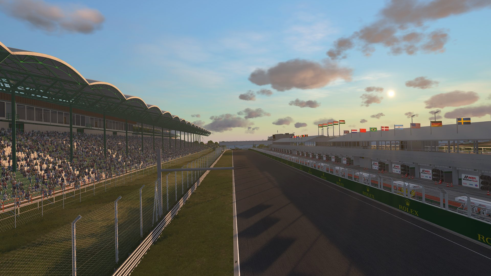

Tracks for Project CARS 2
Circuits built for PC2 with its own materials, lighting, AI and pit lanes. Free to download and installed with JSGME.
Hungaroring, main straight
Tracks
Installing a track
Every download installs the same way. Install.bat runs a plain text PowerShell script you can open and read first, and if you'd rather do it by hand, READ ME FIRST.txt in the download has the manual steps.
-
Get JSGME and Bootfiles
You need JSGME in your Project CARS 2 folder and the "_Bootfiles for PC2" mod (V7.0.0.0 or newer) in its MODS folder.
-
Unzip and run Install.bat
Close the game, unzip the download anywhere and double-click Install.bat. It finds your game, copies the track into MODS and adds it to the track list.
-
Activate it in JSGME
Open JSGME and activate Bootfiles first, then the track. If you chose the HUD map, activate that last.
- To remove a track, deactivate it in JSGME and run Uninstall.bat from the download.